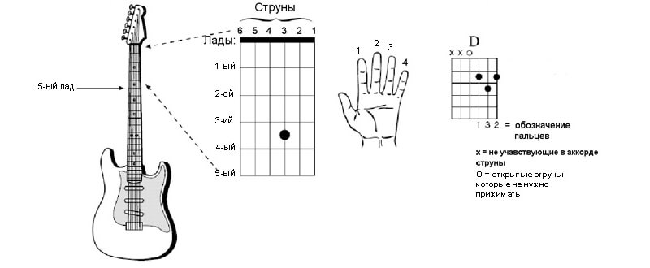
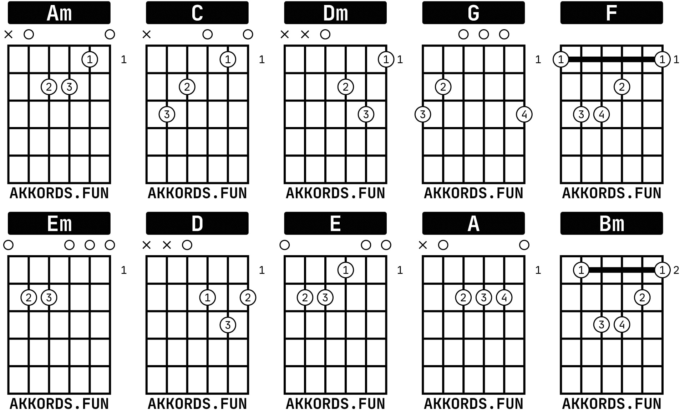

Если ищете лёгкую схему для начинающих музыкантов, то подойдут открытые варианты, представленные на сайте. В данном случае не нужно зажимать баре. Такая игра характеризуется простотой.
Рекомендуется использовать на начальных этапах обучения. Тем, кто уже освоил инструмент, подойдут более сложные схемы. Они помогут добавить в музыку новые, дополнительные краски.
Что такое аккорды
Аккордом является одновременное звучание трех нот. Важным понятием является именно одновременное звучание, а не последовательно. Как и ноты, аккорды используют для графическое обозначение звука музыкального произведения.
Ниже представлено видео, в котором подробно разбираются аккорды для начинающих.
10 основных аккордов для гитары
Написание мелодии на любом инструменте подразумевает применение одинаковых принципов. Следовательно, аккорды для гитары подойдут и для укулеле, балалайки и др. Одинаковы как для акустики, так и для классики. Ознакомиться с полной таблицей аккордов можно на нашем сервисе, где полезная информация доступна без регистрации и оплаты.
Зная теорию музыки и особенности построения мелодий, Вы сможете писать песни самостоятельно. Музыканту, как начинающему, так и опытному, не потребуются все представленные онлайн аккорды, однако ознакомиться с ними стоит.
Трудности начинающих музыкантов
Новички часто сталкиваются со сложностью настройки инструмента. Другой трудностью предстаёт умение читать аккорды. Точки на картинке представляют собой места, где требуется зажимать струну. Под линиями подразумеваются порожки, которые разделяют лады. Самая толстая отображает первый лад.
Настраивание струн – несложный процесс. Для этого рекомендуется использовать тюнер, который можно найти бесплатно на нашем сайте.
Если Вы начали изучать сольфеджио, то должны знать, что ноты обозначаются буквенно. К примеру, нота До пишется как C. При добавлении к ней буквы m, получится минорный аккорд, такой как Cm. Запись, в которой отсутствуют дополнительные буквы, указывает на мажорное звучание. Если помимо буквенного обозначения, есть цифра 7, это говорит о септаккордах.
Аккордов насчитывается внушительное количество. Их более тысячи. Несмотря на их множество, не обязательно знать их все. Подойдут лишь основные аккорды, с помощью которых можно писать практически любые песни. Чтобы научиться подбирать аккорды, совсем необязательно иметь безупречный слух. Обычно достаточно средних навыков игры.
Освоить гитару можно самостоятельно, но рекомендуется воспользоваться онлайн-уроками или посетить музыкальную школу. Если данный инструмент кажется Вам сложным, начать стоит с укулеле, который имеет меньшее количество струн. Частые тренировки помогут освоить аккорды и научиться подбирать их правильную последовательность к произведению.
Со временем Ваш мозг выучит основные построения, поэтому игра песен и их сочинения станут практически автоматизированными.